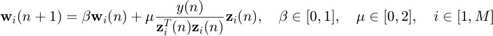
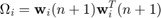
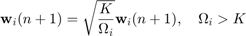
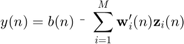

Multiple-Input Canceller LMS Filter
Apply an LMS filter to each output track of a GSC blocking matrix, summing the output of the filters at each iteration and subtracting from a fixed beamformer signal to generate the overall bemaformer output. The output signal is rerouted to the adaptive filters as the error signal so that target signal power is suppressed, causing a purer noise signal to be subtracted from the delay and sum beamformer. In addition, a norm-constaint can be placed on the LMS taps to help guide their adaptation.
Syntax
[y, wSave] = mclms(z, b, mu, order, beta, zInit, wInit, wForce, mcAdapt, K)
Required Inputs
- z - Matrix of blocking matrix outputs, each column a track
- b - Column vector of Delay and Sum beamformer output
- mu - Step size of adaptation. This algorithm uses the normalized LMS variant so mu must be in [0,2] to ensure stability.
- order - Order of the adaptive filter.
- beta - Leakage coefficient (forgetting factor). Beta must be in [0,1], where 0 implies zero memory and 1 implies no forgetting (neither extreme is likely to be very helpful).
Optional Inputs
- zInit - Vector of values to be initially fed into the adaptive filter inputs ahead of bm. For a windowed application this can allow for seamless transition between windows without data at window boundaries losing time in the filter. If initial values aren't needed, simply set to zeros.
- wInit - Matrix of tap weights for the first iteration. This is good for ensuring that runs over audio windows flow smoothly, To avoid forcing this initial value, supply []
- wForce - Matrix of tap weights to force the filters into using, rather than adapting. This is useful for recreating a previous run with the same filter behavior. To avoid forcing weights, supply []
- K - Specifies the threshold of a norm-constrained LMS (NLMS) filter, where at each iteration given Omega = norm(w) the coefficient update will be scaled by sqrt(K/Omega) if Omega > K.
Outputs
- y - Column vector of the final beamformer output audio signal.
- wSave - Matrix of all tap weights generated by the adaptive filters. These are useful for debugging and for recreating the same filtering effects with different inputs, and the last set can be used as input to a subsequent period if time windowing.
References
- Hoshuyama, Osamu, and Akihiko Sugiyama. "Robust Adaptive Beamforming." Microphone Arrays : Signal Processing Techniques and Applications. Ed. Michael Brandstein and Darren Ward. New York: Springer, 2001.
Written by Phil Townsend (jptown0@engr.uky.edu) June 10, 2008
Contents
Function Declaration
function [y, wSave] = mclms(z, b, mu, order, beta, zInit, wInit, ... wForce, mcAdapt, K)
Argument Error Checking
error(nargchk(10, 10, nargin)); if ~isreal(z) || length(size(z)) ~= 2 || ~all(all(isfinite(z))) error('z must be a real matrix'); elseif ~isvector(b) || ~isreal(b) || ~all(isfinite(b)) error('b must be a real vector'); elseif isempty(mu) || ~isscalar(mu) || ~isreal(mu) || ~isfinite(mu) error('mu must be a real scalar'); elseif isempty(order) || ~isscalar(order) || ~isreal(order) || ... ~isfinite(order) || order < 0 || ... abs(mod(order,floor(order))) > 0 error('order must be a positive integer'); elseif isempty(beta) || ~isscalar(beta) || ~isreal(beta) || ... ~isfinite(beta) || beta < 0 || beta > 1 error('beta must be a real scalar in [0,1]'); elseif length(size(zInit)) ~= 2 || ~isreal(zInit) || ... ~all(all(isfinite(zInit))) error('zInit must be a real matrix'); elseif ~isempty(wInit) && ... (length(size(wInit)) ~= 2 || ~isreal(wInit) || ... ~all(all(isfinite(wInit)))) error('wInit must be a real matrix'); elseif ~isempty(wForce) && ... (~isreal(wForce) || length(size(wForce)) ~= 3 || ... size(wForce,1) ~= order || ... size(wForce,2) ~= size(z,2) || ... ~all(all(all(isfinite(wForce))))) error('wForce must be a real cubic matrix'); elseif ~isempty(mcAdapt) && ... (~isreal(mcAdapt) || ~all(all(isfinite(mcAdapt)))) error('mcAdapt must be a real matrix'); elseif ~isempty(K) && ... (~isscalar(K) || ~isreal(K) || ~isfinite(K) || K < 0) error('K must be a real positive scalar'); end
Error using mclms (line 69) Not enough input arguments.
Adaptive Filtering
Apply the LMS algorithm with possibly some tap controls. The LMS adaptation algorithm applied to each audio track is

where the algorithm is "leaky" if beta < 1. Note that, as in all GSC algorithms, the output signal y is used directly as the error signal in these filters, thus minimizing the overall output power of the beamformer. In addition, if K is specified, we have a norm-constrained adaptive filter (NCAF), which restrains the total power that can pass through the filter if the tap norm exceeds K, as described by


The output of the beamformer is calculated as the Fixed-Beamformer Output minus the sum of the filter outputs.

Each column of w holds the taps for an adaptive filter on a column of the input microphone tracks x. wSave saves a 3-D matrix of all values of w. Use wInit for initial value of w if supplied; zeros otherwise.
if isempty(wInit), w = zeros(order, size(z,2)); else w = wInit; end if isempty(zInit), zInit = zeros(order, size(z,2)); end wSave = zeros(order, size(z,2), length(b)); y = zeros(size(b)); % This highly-vectorized code implements many LMS filters of order % ord--one for each track of BM for n = 1:length(b) % Select the data window for this iteration if n <= order % feed in supplied past values ahead of z zWin = [zInit(end-order+n+1:end,:); z(1:n,:)]; else % need only data from given z zWin = z(n-order+1:n,:); end % Compute output for this iteration and ensure stability y(n) = b(n) - sum(diag(w'*zWin)); if ~isfinite(y(n)), error('Output has blown up'), end % If wForce supplied, use those supplied weights. Otherwise, % figure out taps for the next iteration if ~isempty(wForce), w = wForce(:,:,n); continue, end % Tap update. If mcAdapt specified, adapt only requested columns if isempty(mcAdapt) normvec = sum(zWin.^2); % Norm of each column normvec(normvec<1e-10) = 1e-10; % Ensure norm is nonzero normmat = ones(order,1)*normvec; % Expand to matrix w = beta*w + mu*y(n)*zWin ./ normmat; % Tap update else amcInds = find(mcAdapt(n,:)); normvec = sum(zWin(:, amcInds).^2); % Norm of each column normvec(normvec<1e-10) = 1e-10; % Ensure norm is nonzero normmat = ones(order,1)*normvec; w(:,amcInds) = beta*w(:,amcInds) + ... mu*y(n)*zWin(:,amcInds) ./ normmat; % Tap update end % Tap weight constraints % NCAF (Norm-Constrained Adaptive Filter) if ~isempty(K) % Finding norm without Matlab's function lets us avoid for Omega = sum(w.^2); % Find norm of all columns OmegaMat = ones(order,1) * Omega; % Expand to a norm matrix inds = OmegaMat > K; % save comparison so it doesnt repeat if ~isempty(mcAdapt) % apply AMC SNR threshold if specified amcIndMat = ones(order,1) * mcAdapt(n,:); inds = OmegaMat > K & amcIndMat; end w(inds) = w(inds) .* sqrt(K./OmegaMat(inds)); end % Save the taps used on this iteration wSave(:,:,n) = w; end % function mclms